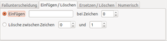

GPRename
Dieser Artikel wurde für die folgenden Ubuntu-Versionen getestet:
Ubuntu 14.04 Trusty Tahr
Zum Verständnis dieses Artikels sind folgende Seiten hilfreich:
Einen Editor öffnen, optional
Root-Rechte erlangen, optional
GPRename  ist ein Programm zum Umbenennen von Dateien und Verzeichnissen. Dieses kann sowohl auf einzelne Dateien als auch per Stapelverarbeitung auf mehrere Dateien gleichzeitig angewendet werden. Besonders erwähnenswert ist die vom Programm gebotene Möglichkeit, Umbenennungen via Mausklick wieder rückgängig machen zu können. Des Weiteren ist ein einfacher Suchfilter vorhanden sowie eine Logbuchfunktion, welche alle vorgenommenen Umbenennungen protokolliert und damit auch für spätere Analysezwecke verfügbar macht. Das in der Programmiersprache Perl geschriebene Programm wird unter den Bedingungen der GNU General Public License (GPL) herausgegeben.
ist ein Programm zum Umbenennen von Dateien und Verzeichnissen. Dieses kann sowohl auf einzelne Dateien als auch per Stapelverarbeitung auf mehrere Dateien gleichzeitig angewendet werden. Besonders erwähnenswert ist die vom Programm gebotene Möglichkeit, Umbenennungen via Mausklick wieder rückgängig machen zu können. Des Weiteren ist ein einfacher Suchfilter vorhanden sowie eine Logbuchfunktion, welche alle vorgenommenen Umbenennungen protokolliert und damit auch für spätere Analysezwecke verfügbar macht. Das in der Programmiersprache Perl geschriebene Programm wird unter den Bedingungen der GNU General Public License (GPL) herausgegeben.
Installation¶
| GPRename |
GPRename ist in den offiziellen Paketquellen vorhanden und kann über folgendes Paket installiert [1] werden:
gprename (universe)
 mit apturl
mit apturl
Paketliste zum Kopieren:
sudo apt-get install gprename
sudo aptitude install gprename
Bedienung¶
Bei Desktopumgebungen, welche ein klassisches Anwendungsenü bereitstellen, kann das Programm über den Menüpunkt "Zubehör -> GPRename" oder "Dienstprogramme -> GPRename" gestartet [2] werden.
Die Bedienung des Programms ist intuitiv und selbsterklärend. Im oberen Bereich des Hauptfensters kann, ähnlich wie in einem klassischen Dateimanager, über die in der linken Spalte befindliche Baumansicht zu dem gewünschten Verzeichnis oder den gewünschten Dateien navigiert werden. Anschließend werden die zur Umbenennung vorgesehenen Dateien oder Verzeichnisse auf der rechten Seite mittels  linkem Mausklick markiert. Sollen mehrere Dateien oder Verzeichnisse markiert werden, ist während des Anklickens die
Strg -Taste gedrückt zu halten. Mittels
Strg +
A werden alle Elemente im Verzeichnis markiert.
linkem Mausklick markiert. Sollen mehrere Dateien oder Verzeichnisse markiert werden, ist während des Anklickens die
Strg -Taste gedrückt zu halten. Mittels
Strg +
A werden alle Elemente im Verzeichnis markiert.
Im unteren Bereich des Fensters stehen dem Benutzer nun mehrere Reiter mit Möglichkeiten zur Dateiumbenennung zur Verfügung:
| Übersicht über die Umbenennungs-Reiter | |
| Reiter | Beschreibung |
| "Fallunterscheidung" | Umwandlung von Buchstaben/aller Buchstaben des Dateinamens in Groß- oder Kleinbuchstaben |
| "Einfügen/Löschen" | Einfügen bzw. Löschen von Zeichen des Dateinamens |
| "Ersetzen/Löschen" | Ersetzen von Zeichen des Dateinamens durch andere |
| "Numerisch" | Nummerierungen von Dateien, wie sie beispielsweise für Archivierungszwecke von Dateien hilfreich sein können; auch hier werden mehrere Möglichkeiten zur praktischen Dateibenennung angeboten |
| Fallunterscheidung |
|  |
| Einfügen/Löschen |
| Ersetzen/Löschen |
| Numerisch |
Die Schaltfläche blendet im oberen Verzeichnisteil des Hauptfensters neben dem Originalnamen probeweise den neuen Dateinamen ("Neuer Name") ein, um dem Benutzer vor dem endgültigen Umbenennen eine Kontrollmöglichkeit zu bieten, dass alle Einstellungen auch wirklich wunschgemäß vorgenommen wurden.
Der Vorgang des Umbenennens wird schließlich über die Schaltfläche gestartet. Notfalls kann die Umbenennung mittels Schaltfläche auch wieder revidiert werden.
Weitere kleine Tipps, um bei der Programmverwendung Fehler zu vermeiden, bietet der Menüpunkt "Hilfe -> Tipps".
Optionen¶
Über das Menü "Optionen" stehen einige Einstellmöglichkeiten für das Programm zur Verfügung:
Aktivierung einer automatischen Vorschaufunktion
Suchfilter für Dateien
Anzeige oder Ausblenden versteckter Dateien
Betrachten der Protokolldatei der vorgenommenen Umbenennungen
und mehr.
Problembehebung¶
Programmstarter fehlt¶
Ab Ubuntu 15.10 fehlt ein Programmstarter. Abhilfe schafft die Erstellung [3] der Datei /usr/share/applications/gprename.desktop mit Root-Rechten [4]. Der Inhalt:
[Desktop Entry] Name=GPRename Comment=To rename files and directories in batch Comment[de]=Dateien und Ordner via Stapelverarbeitung umbenennen Exec=gprename Icon=/usr/share/pixmaps/gprename/gprename.png Terminal=false Type=Application Categories=Utility;FileManager;
 Programme zum Umbenennen (mit grafischer Oberfläche)
Programme zum Umbenennen (mit grafischer Oberfläche)- Erstellt mit Inyoka
-
 2004 – 2017 ubuntuusers.de • Einige Rechte vorbehalten
2004 – 2017 ubuntuusers.de • Einige Rechte vorbehalten
Lizenz • Kontakt • Datenschutz • Impressum • Serverstatus -
Serverhousing gespendet von